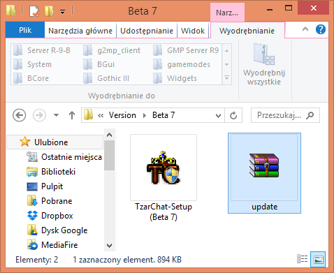
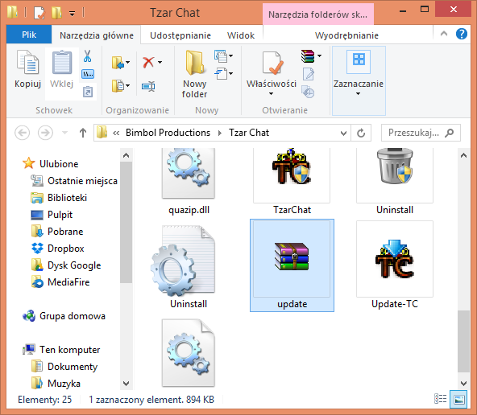
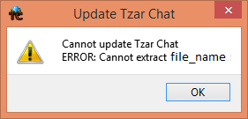
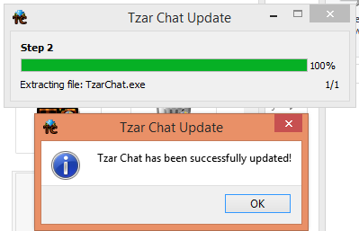

Update
How to manually update client?
1. Close Tzar Chat!
2. Download update file (update.zip):

3. Move update.zip to TzarChat directory:

4. Open program Update-TC.exe. If you receive this error message:

Open program Update-TC.exe with Admin rights!
If everything goes well, your Tzar Chat will be updated, as on screen shot:
